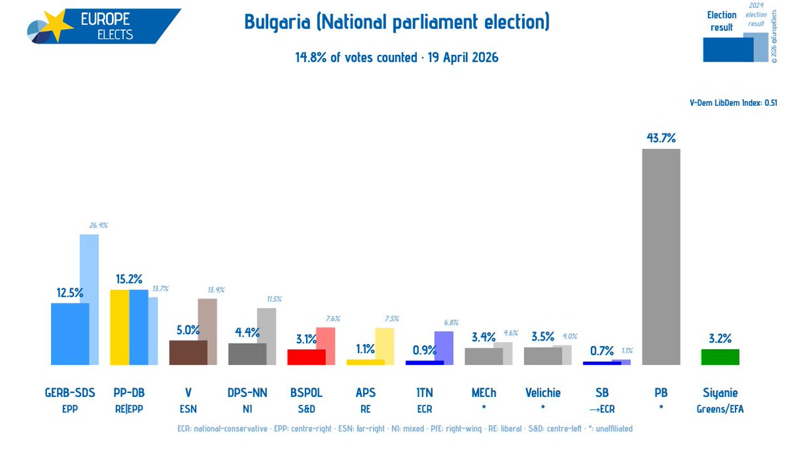

𝐀𝐬𝐡𝐥𝐞𝐲 𝐁𝐥𝐨𝐜𝐤🍥🌹🇹🇼🏳️⚧️🇪🇺
@bolckAshley
#Bulgaria 🇧🇬🇧🇬🇧🇬
保加利亞政壇大地震——由前總統魯門·拉德夫領導的「進步保加利亞」在目前的開票進度為14.8%的情況下奪得了43.7%的選票，而長期主導保加利亞政壇的兩大勢力均大幅萎縮。
「進步保加利亞」是一個經濟中左翼，文化右翼的「混合型政黨」，其與斯洛伐克的smer或者匈牙利的青民盟十分相似。

Europe Elects
@EuropeElects
Bulgaria, 14.8% of votes counted:
National parliament election
PB-*: 43.7% (+43.7)
PP-DB-RE|EPP: 15.2% (+1.5)
GERB-SDS-EPP: 12.5% (-13.9)
V-ESN: 5.0% (-8.4)
DPS-NN-NI: 4.4% (-7.1)
Velichie-*: 3.5% (-0.5)
MECh-*: 3.4% (-1.2)
Siyanie-G/EFA: 3.2% (+3.2)
BSPOL-S&D: 3.1% (-4.5) https://t.co/XfeOjfWI5W